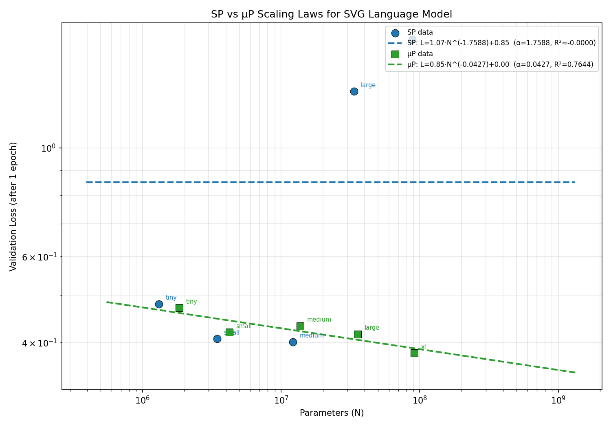
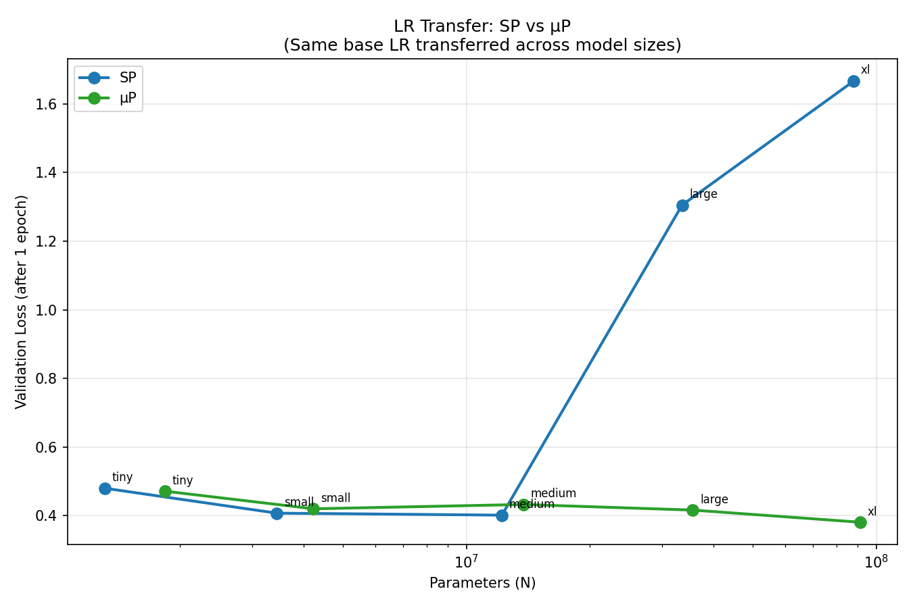
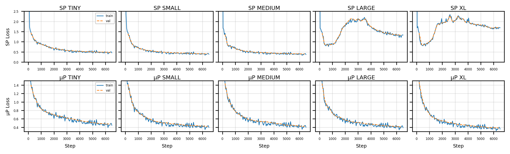
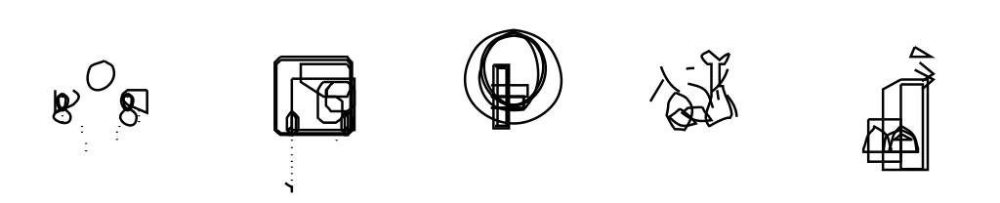
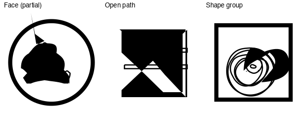
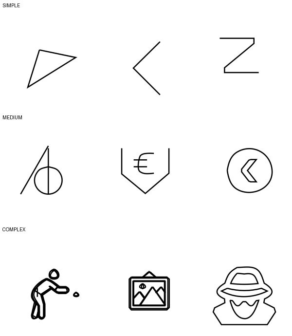

We fit a Kaplan-style power law $L(N) = a \cdot N^{-\alpha} + c$ to validation losses across five model sizes. Under SP, a single learning rate causes Large and XL to diverge, precluding a meaningful fit. Under $\mu$P, all five sizes converge and the losses follow a power-law trend: $\alpha = 0.043$, $R^2 = 0.76$.

$\mu$P's Tiny-optimal learning rate ($1 \times 10^{-2}$) transfers to all five sizes without adjustment. In contrast, SP's optimal rate ($3 \times 10^{-3}$) causes instability at larger scales—confirming that $\mu$P enables reliable hyperparameter transfer for SVG.


The $\mu$P XL model (91.2M params, extended to 2 epochs) generates valid, renderable SVG icons. Interestingly, generation quality does not track loss monotonically—Medium (13.8M) achieves 90% render rate while other sizes score 60–70%, consistent with a Chinchilla data-limited regime at larger scales.


| Name | $d_{\text{model}}$ | Layers | Heads | $d_{\text{ff}}$ | Params ($\mu$P) |
|---|---|---|---|---|---|
| Tiny | 128 | 4 | 4 | 512 | 1.8M |
| Small | 192 | 6 | 6 | 768 | 4.2M |
| Medium | 384 | 6 | 6 | 1,536 | 13.8M |
| Large | 512 | 10 | 8 | 2,048 | 35.7M |
| XL | 768 | 12 | 12 | 3,072 | 91.2M |
We use a decoder-only Transformer derived from nanoGPT, trained with AdamW ($\beta_1{=}0.9$, $\beta_2{=}0.95$, weight decay 0.1) and a cosine LR schedule with 3% warmup. All models are trained for one epoch on a 107M-token SVG corpus (94,476 cleaned SVG sequences from the StarVector collection).
$\mu$P is implemented via the mup package with a base width of 128. Input embeddings and output projections are untied under $\mu$P since they follow different scaling rules. The implementation is verified via a coord check confirming width-independent activations.

Kaplan et al. (2020). Scaling Laws for Neural Language Models. arXiv:2001.08361.
Hoffmann et al. (2022). Training Compute-Optimal Large Language Models. arXiv:2203.15556.
Yang et al. (2022). Tensor Programs V: Tuning Large Neural Networks via Zero-Shot Hyperparameter Transfer. arXiv:2203.09789.
Rodriguez et al. (2023). StarVector: Generating Scalable Vector Graphics Code from Images and Text. arXiv:2312.11556.